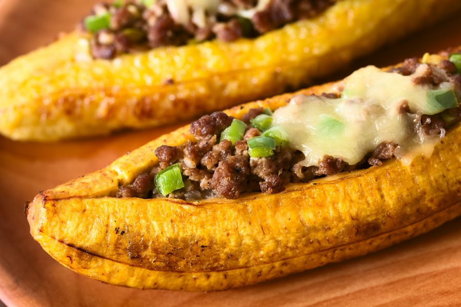
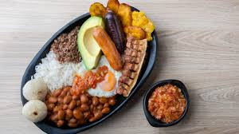

Por otro lado, el plátano relleno de carne molida y queso es típico de Colombia, y lo podemos consumir a la hora del almuerzo.
El dulce tampoco puede faltar en la gastronomía colombiana. Los plátanos de maduro rellenos son comunes en los almuerzos de las familias
del centro y norte de país, y son básicamente un complemento a varios tipos de comida. Son maduros al horno rellenos con queso crema,
arequipe, bocadillos y mantequilla. Los rellenos podrían variar según la región y el gusto de cada familia, por ejemplo, muchas veces se
preparan con solo queso y mantequilla y el tipo de queso que se use puede ser indistinto. Para hornearlos se suelen envolver el papel
aluminio y su preparación es bastante sencilla. El plátano maduro al horno es una preparación fácil y deliciosa, además de beneficiosa,
puesto que este fruto aporta muchas energías al organismo. Entre todos sus beneficios, destaca el elevado aporte de vitaminas, fibra y
minerales esenciales como el magnesio, el potasio y el calcio. De esta forma, incluir este alimento en nuestra dieta es altamente recomendable.

La bandeja paisa es uno de los platos más representativos de Colombia y la insignia de la gastronomía antioqueña, y es propio de esta región, Antioquia.
Una de las características fundamentales de este plato es su abundancia, tanto en cantidad como en variedad de alimentos, de tal modo que la bandeja
paisa completa solo cabe servirla en platos grandes llamados bandejas. En su forma y composición actual, es un plato de desarrollo reciente;
para los paladares del resto de Colombia, como desarrollo de estrategia comercial y culinaria, no aparecen referencias en los libros de cocina
anteriores a 1950 ni en otros documentos anteriores a esa fecha en la gastronomía colombiana, pero por esta razón no quiere decir que es un
plato nuevo. El plato tiene sus orígenes en el envuelto antioqueño, que desde mediados del siglo XIX conformaba la única alimentación que
acompañaba al arriero de la región antioqueña y del antiguo Viejo Caldas. Es un compuesto culinario con abundante proporción de carbohidratos,
ya que debía suplir el gran gasto de energía en las jornadas de viaje que tenía que desarrollar el arriero antioqueño en su trabajo diario.
Se dice que fue bautizado como plato oficial en Bogotá, en COTELCO ( Asociación Hotelera y Turística de Colombia), cuando al crear el primer
manual de platos típicos se observa que para la región de Antioquia no existía un plato típico característico.